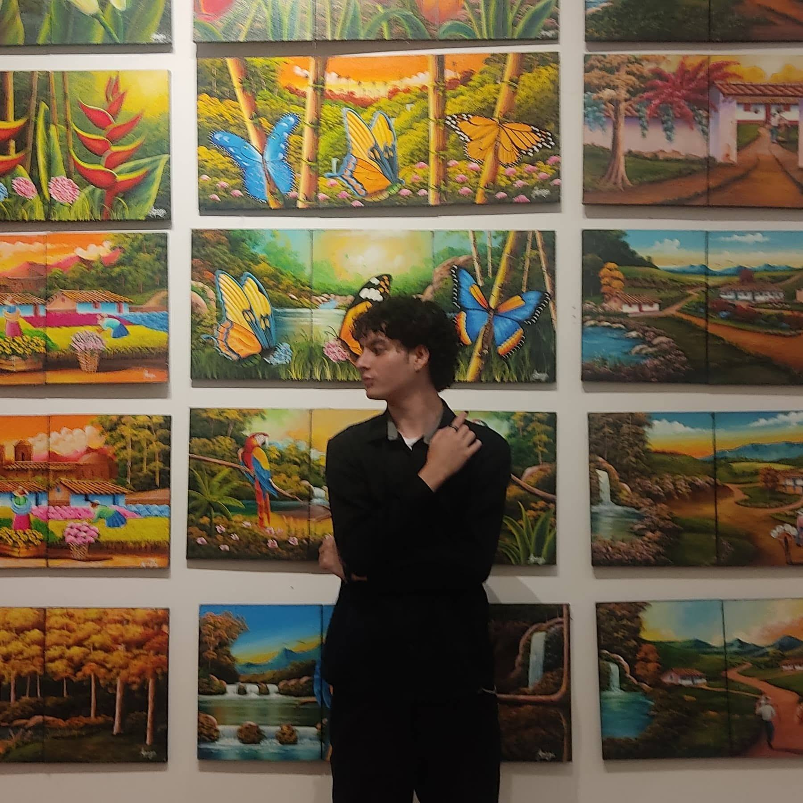

Jacobo Loaiza
Ramírez
Estudiante Productor Audiovisual
Soy Jacobo Loaiza Ramírez, editor audiovisual y fotógrafo enfocado en transformar ideas en historias visuales con ritmo e identidad propia. Me especializo en montaje narrativo, cortometrajes, piezas comerciales y fotografía, cuidando cada detalle desde el guion hasta el corte final para lograr un acabado cinematográfico.
